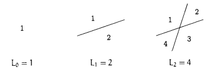
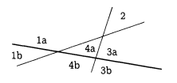

"이제 나는
어떠한 저항도 하지 않기로 결심했다."
1914년 8월 26일, 비트겐슈타인.
논리학
수학
물리학
전산학
컴퓨터공학
매체학
음악
철학
피자 칼로 피자를 $n$번 직선으로 자른다고 할 때 피자 조각이 최대 몇 개나 나올까?
좀 더 학술적으로 표현하자면, 평면에 놓인 $n$개의 선(직선)으로 정의되는 영역의 최대 개수 $L_{n}$이 무엇인가?
우선 작은 사례 고찰

(틀린) 첫 추측
$$L_{n}=2^{n}?!$$
반례
세 번째 선을 추가하면 하나의 직선으로 기존 영역 중 최대 세 개의 영역을 둘로 분할 할 수 있음을 알 수 있음.

$$L_{3}=4+3=7.$$
교훈과 부등식
만일 $n$번째 선이 분할하는 기존 영역이 $k$개라면, 그리고 오직 그런 경우, 그 선에 의해 영역의 수는 $k$만큼 증가.
- 두 선은 많아야 하나의 점에서 만남.
- 따라서 $n$번째 새 선 하나는 기존의 선 $n-1$개와 많아야 $n-1$개의 서로 다른 점에서 교차.
- $k\leq n$임은 자명.
$$L_{n}\leq L_{n-1}+n,\;for\;n>0.$$
부등식을 등식으로
- $n$번째 선을 기존 그 어떤 선과도 평행하지 않게
-> 기존의 모든 선과 교차
- $n$번째 선이 그 어떤 기존 교차점도 지나지 않게
-> 기존 선들과 모두 다른 점에서 교차
$$ \begin{align} L_{0}&=1; \\ L_{n}&=L_{n-1}+n,\;for\;n>0.\end{align} \tag{1.4} $$
펼치거나(unfold)
$$ \begin{align} L_{n}&=L_{n-1}+n \\ &=L_{n-2}+(n-1)+n \\ &=L_{n-3}+(n-2)+(n-2)+n \\ \vdots \\ &=L_{0}+1+2+ \dotso + (n-2) + (n-1) + n \\ &= 1+ S_{n},\; where\; S_{n}=1+2+3+\dotso+(n-1)+n.\end{align}$$
$L_{n}$은 처음 $n$개의 정수들의 합 $S_{n}$에 $1$을 더한 것.
풀어보기(unwind)
$$ \begin{align} 2S_{n}&=(n+1)+(n+1)+(n+1)+\dotso+(n+1)+(n+1)\\S_{n}+S_{n}&= 1 + n + 2 + (n-1) + 3 + (n-2) + \dotso + (n-1) + 2 + n + 1. \end{align}$$
$$ \begin{align} S_{n}=\frac{n(n+1)}{2},\;for\;n\geq 0.\end{align} \tag{1.5} $$
$$ \begin{align} L_{n}=L_{n-1}+n=\left ( \frac{1}{2}(n-1)n+1 \right )+n=\frac{1}{2}n(n+1)+1.\end{align} \tag{1.6} $$
지그(ZIG)!
평면에 놓인 $n$개의 꺾인 선들이 정의하는 영역들의 최대 개수 $Z_{n}$은 무엇인가?

$$Z_{2}=7$$
하나의 꺾인 선은 두 개의 직선이 각자 영역을 둘로 나누되, "두" 직선의 교점 너머에 있는 영역들이 하나로 합쳐지는 효과를 낸다는 점.

$$ \begin{align} Z_{n}=L_{2n}-2n&=2n(2n+1)/2+1-2n//&=2n^{2}-n+1.\;for\;n\geq 0.\end{align} \tag{1.7} $$